ECD SYSTEM > Lack of Power or Hesitation |
| Malfunction Condition | Main Trouble Area | Related Trouble Area |
|
|
|
| Faults and Symptoms of Common Rail Diesel Components |
Engine Control
| Component | Mass air flow meter | |
| Main fault | Decrease in performance (foreign matter is stuck) | |
| Symptoms | Lack of power, black smoke | |
| Data List | MAF | |
| ||
| Component | Intake system | |
| Symptom: Main fault |
| |
| Data List |
| |
| Component | Turbocharger system | |
| Main fault |
| |
| Symptoms | Lack of power (when vehicle starting, when heavy load) (Black smoke is not emitted when racing while vehicle stopped) | |
| Data List | MAP (inside intake air pressure), Target Booster Pressure
| |
| Diagnostic Point |
| |
| Component | Exhaust system | |
| Main fault | Blockage | |
| Symptoms | Lack of power (high engine speed, when heavy load) | |
| Data List | MAP (inside intake air pressure), Target Booster Pressure When the accelerator is fully depressed, if the MAP is 20 kPa lower than Target Booster Pressure for more than 5 seconds then a lack of power will be felt. | |
| Component | Glow system | |
| Main fault | Open circuit, glow plug relay fault | |
| Symptoms | Difficult to start, rough idle, knocking, white smoke (when cold) | |
| Data List | Check the glow plug indicator light | |
| Diagnostic Point | Try to measure the resistance of the glow plug | |
| Component | Engine | |
| Main fault | Damaged, Seized up | |
| Symptoms | Cannot crank, crank speed is low, strange noise | |
| Component | Engine | |
| Main fault | Loss of compression | |
| Symptoms | Rough idle (lack of power always) | |
| Data List | Engine Speed of Cyl#
| |
Diesel Injection
| Component | Fuel supply pump | |
| Main fault | - | |
| Symptoms | Difficult to start, engine stalling, rough idle, lack of power | |
| Data List | Fuel Press, Target Common Rail Pressure, Target Pump SCV Current
| |
| Diagnostic Trouble Code | Even if Fuel Press is less than Target Common Rail Pressure, a DTC will not be stored. | |
| Component | Fuel filter | |
| Main fault | Blockage | |
| Symptoms | Difficult to start, engine stalling, rough idle, lack of power | |
| Data List | Fuel Press, Target Common Rail Pressure
| |
| Diagnostic Trouble Code | Even if Fuel Press is less than Target Common Rail Pressure, a DTC will not be stored. | |
| Component | Fuel injector | |
| Main fault | Blockage | |
| Symptoms | Rough idle, lack of power, black smoke, white smoke, knocking | |
| Data List | Injection Feedback Val
| |
| Component | Pressure limiter | |
| Main fault | Does not completely close | |
| Symptoms | Difficult to start, engine stall, rough idle, lack of power | |
| Component | Injector Driver (EDU) | |
| Main fault | Circuit fault: The fuel injector does not open. | |
| Symptoms | Difficult to start, rough idle, lack of power, black smoke, white smoke, knocking | |
| Data List | Same as fuel injector | |
| Diagnostic Trouble Code | When the EDU has a fault, some DTCs may be storedr. | |
| Component | Fuel pressure sensor | |
| Main fault | Open circuit, decrease in performance (foreign matter is stuck) | |
| Symptoms | Difficult to start, rough idle, engine stall, lack of power | |
| Data List | Fuel Press, Target Common Rail Pressure
| |
| Diagnostic Code | When the fuel pressure sensor has a fault, some DTCs may be stored. | |
| Component | Irregular fuel | |
| Main fault | - | |
| Symptoms | Difficult to start, rough idle (especially when cold) | |
Diesel EGR
| Component | EGR system | |
| Main fault |
| |
| Symptoms |
| |
| Data List | Actual EGR Valve Pos., Target EGR Pos.
| |
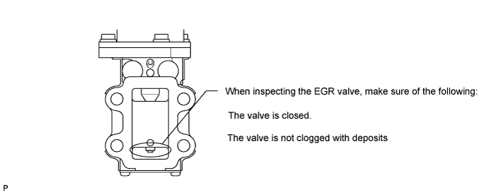
Diesel Throttle
| Component | Diesel throttle system | |
| Main fault | Stuck, does not move smoothly | |
| Symptoms |
| |
| Data List |
| |
| Data List Related to Lack of Power |
Engine Control
| Data List | Judgment of Data List Values | Faulty Component | Diagnosis Note |
| Engine Speed |
| Crankshaft position sensor | When the crankshaft position sensor is malfunctioning, "Engine Speed" is approximately 0 or varies greatly from the actual engine speed. |
| Data List | Judgment of Data List Values | Faulty Component | Diagnosis Note |
| MAP | MAP (inside intake air pressure)
|
|
|
Results of real-vehicle check:
| |||
| Data List | Judgment of Data List Values | Faulty Component | Diagnosis Note |
| MAF | - |
|
|
| Results of real-vehicle check: w/ EGR
| |||
| |||
| Data List | Judgment of Data List Values | Faulty Component | Diagnosis Note |
| Intake Air | After a long soak, the engine coolant temperature, intake air temperature, and ambient air temperature are approximately equal. | Intake air temperature sensor |
|
| - | |||
| Data List | Judgment of Data List Values | Faulty Component | Diagnosis Note |
| Coolant Temp |
| Engine coolant temperature sensor | If the value is -40°C (-40°F) or 140°C (284°F), the sensor circuit is open or shorted. |
| - | |||
Diesel Injection
| Data List | Judgment of Data List Values | Faulty Component | Diagnosis Note |
| Target Common Rail Pressure | - | - |
|
Results of real-vehicle check:
| |||
| Data List | Judgment of Data List Values | Faulty Component | Diagnosis Note |
| Fuel Press |
|
|
|
Results of real-vehicle check:
| |||
| Data List | Judgment of Data List Values | Faulty Component | Diagnosis Note |
| Target Pump SCV Current |
| With this data, component fault not specified, use this data as a reference |
|
Results of real-vehicle check:
| |||
| Data List | Judgment of Data List Values | Faulty Component | Diagnosis Note |
| Injection Feedback Val #1 (to #8) | Injection Feedback Val:
|
| With Injection Feedback Val, find the malfunctioning cylinders. However, before replacing the injector, identify the malfunctioning cylinders with a power balance test. |
| - | |||
| Data List | Judgment of Data List Values | Faulty Component | Diagnosis Note |
| Injection Volume |
| All cylinders | - |
Results of real-vehicle check:
| |||
Diesel Throttle
| Data List | Judgment of Data List Values | Faulty Component | Diagnosis Note |
| Actual Throttle Position Actual Throttle Position #2 |
| Throttle valve | Actual Throttle Position is the closing percentage of the throttle valve.
|
Results of real-vehicle check:
| |||
| Data List | Judgment of Data List Values | Faulty Component | Diagnosis Note |
| Throttle Motor Duty #1 Throttle Motor Duty #2 | Normally operates at 50 +/-20%. If 50 +/-40% continues for a few seconds, it is conceivable that the throttle valve is not sliding properly and the MIL will be illuminated. 0%: Drive diesel throttle to open side 100%: Drive diesel throttle to closed side |
|
|
Results of real-vehicle check:
| |||
Diesel EGR
| Data List | Judgment of Data List Values | Faulty Component | Diagnosis Note |
| Target EGR Valve Pos. Target EGR Valve Pos. #2 | - | - |
|
Results of real-vehicle check:
| |||
| Data List | Judgment of Data List Values | Faulty Component | Diagnosis Note |
| Actual EGR Valve Pos. Actual EGR Valve Pos. #2 | Generally Actual EGR Valve Pos. = Target EGR Pos. +/-5% (completely closed = 0%, completely open = 100%) The EGR valve Active Test can be used to check whether the Actual EGR Valve Pos. = Target EGR Pos. (Take into consideration the temperature of the intake air and the coolant temperature when the malfunction occurs). Sometimes the malfunction only occurs around a certain temperature. Take into consideration the temperature of the intake air and the coolant temperature when the malfunction occurs. | EGR valve | Inspect while comparing to "Target EGR Valve Pos.". |
Results of real-vehicle check:
| |||
| Actual Examples of Malfunction |
Lack of power caused by overly low boost pressure
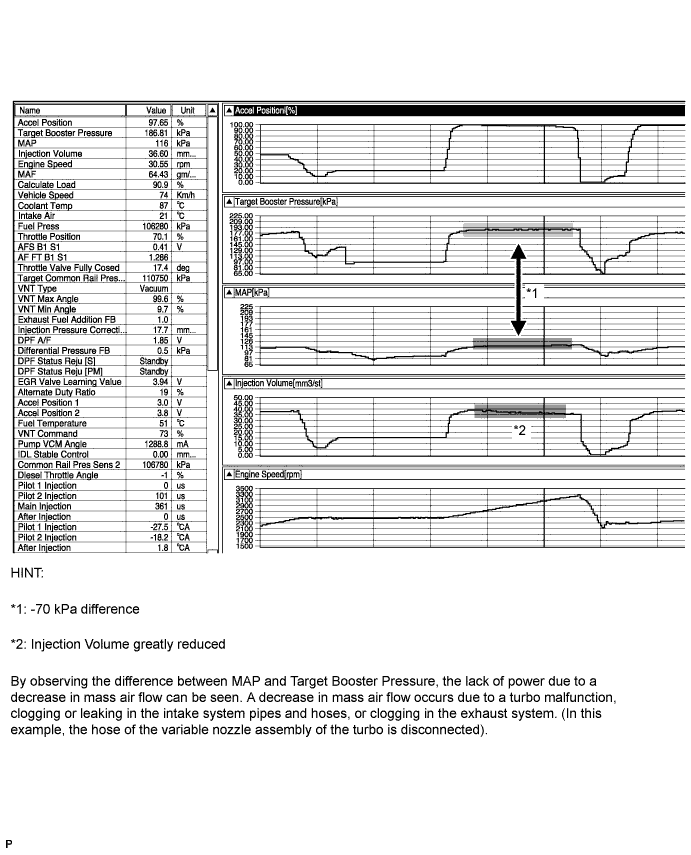
Lack of power caused by overly low MAF
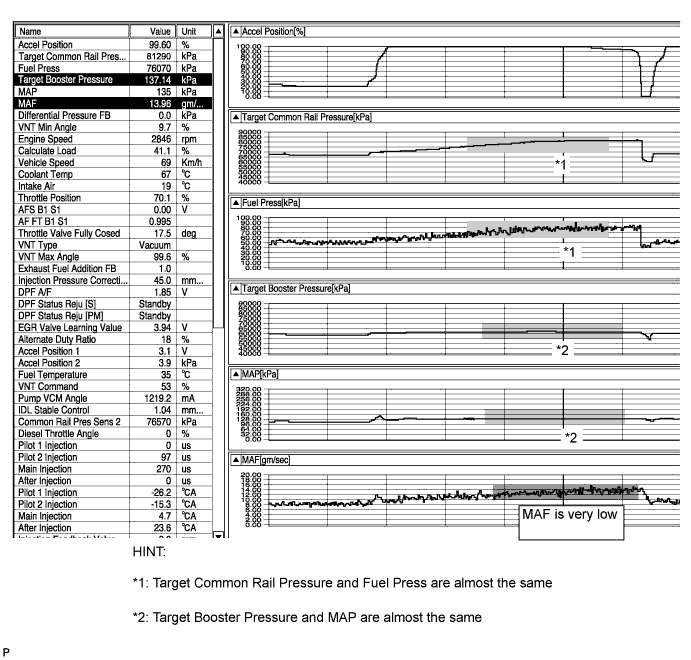
EGR valve stuck in open position
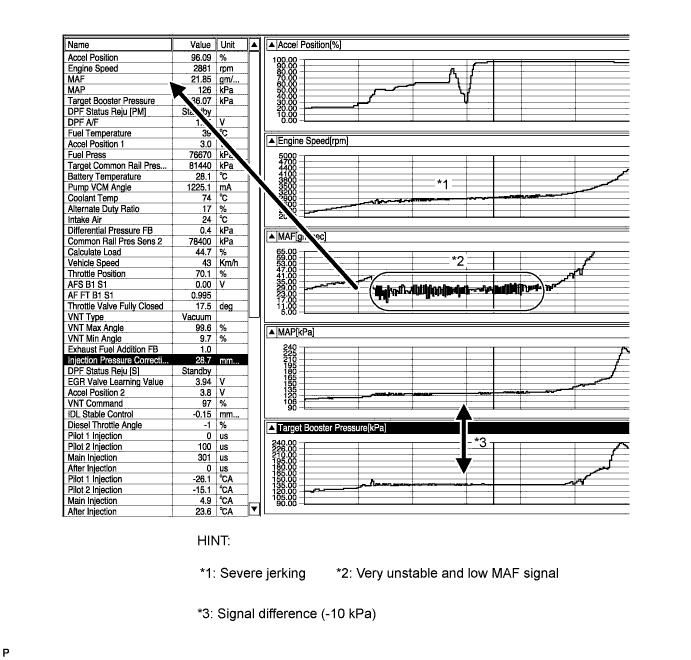
| Explanation of Symptom |
| Lack of Power | The power of the diesel engine is determined by the quantity of injected fuel and the quantity of intake air. The quantity of injected fuel is determined by the fuel pressure and the amount of time the injector is open for. Basically, the fuel pressure is controlled to reach the target fuel pressure. The throttle valve does not restrict air flow volume, so the manifold absolute pressure is almost the same as atmospheric pressure when idling. At more than approximately 1500 rpm, the turbo starts to operate causing the manifold absolute pressure to become higher than atmospheric pressure. The manifold absolute pressure is controlled to reach the Target Booster Pressure. Also, When accelerating the vehicle at full throttle, the throttle is fully open and the EGR valve is fully closed, preserving the mass air flow. |
| Trouble Area Chart According to Problem Cause |
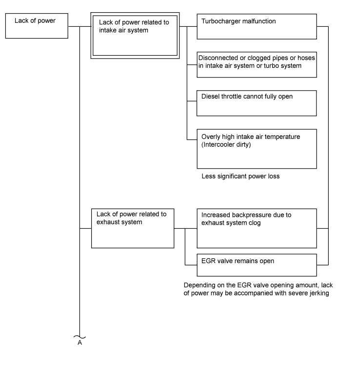
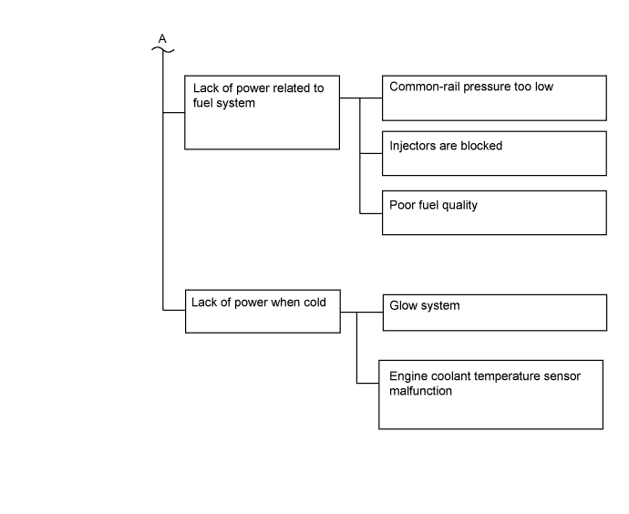
| 1.READ OUTPUT DTC (RELATED TO ENGINE) |
Connect the intelligent tester to the DLC3.
Turn the engine switch on (IG) and turn the tester on.
Enter the following menus: Powertrain / Engine / DTC.
Read pending DTCs.
| Result | Proceed to |
| No DTCs are output | A |
| Engine related DTCs are output | B |
|
| ||||
| A | |
| 2.READ VALUE USING INTELLIGENT TESTER |
Connect the intelligent tester to the DLC3.
Turn the engine switch on (IG) and turn the tester on.
Enter the following menus: Powertrain / Engine / Data List / Low Gear Switch.
Check the Data List when the shift lever is moved to 1 or any position other than 1.
| Data List | Shift Position | Specified Condition |
| Low Gear Switch | 1 | ON |
| Low Gear Switch | Not in 1 | OFF |
|
| ||||
| OK | |
| 3.TAKE DATA LIST DURING LACK OF POWER |
Connect the intelligent tester to the DLC3.
Start the engine and turn the tester on.
Enter the following menus: Powertrain / Engine / Data List / All Data.
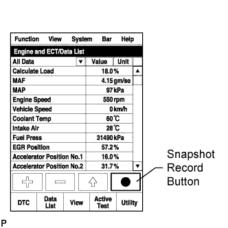 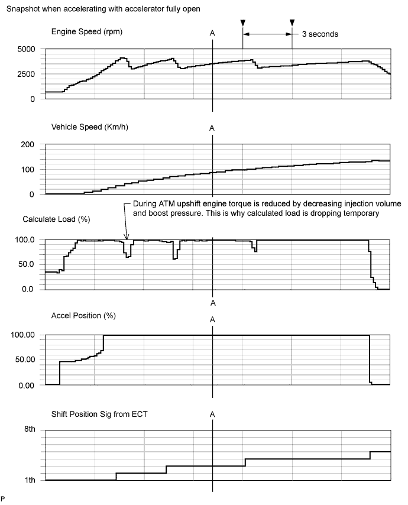 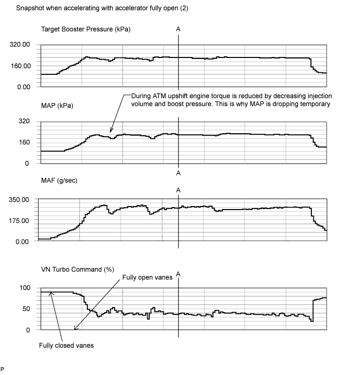 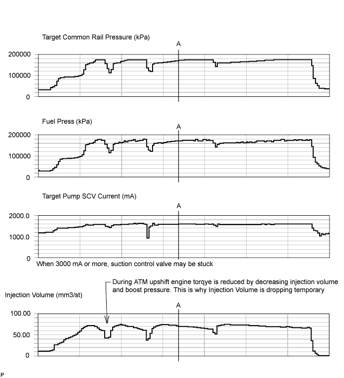 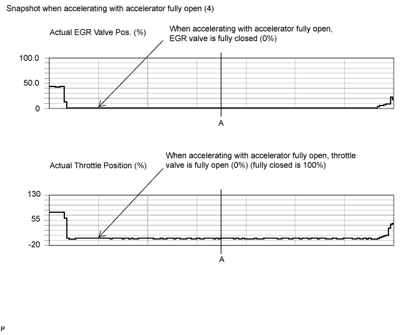 |
Take a snapshot of the following Data Lists with the intelligent tester during lack of power.
| Data List | Value | Unit |
| Vehicle Speed | 85 | km/h |
| Engine Speed | 3500 | rpm |
| Accel Position | 99.60 | % |
| Shift position SIG from ECT | 3 | th |
| Target Booster Pressure | 222.26 | kPa |
| MAP | 224 | kPa |
| MAF | 271.51 | g/sec |
| Calculate Load | 99.6 | % |
| Target Common Rail Pressure | 171150 | kPa |
| Fuel Press | 171870 | kPa |
| Target Pump SCV Current | 1594.6 | mA |
| Injection Volume | 71.34 | mm3/st |
| VN Turbo Command | 38 | % |
| Actual EGR Valve Pos. Actual EGR Valve Pos. #2 | 0 | % |
| Actual Throttle Position Actual Throttle Position #2 | 0 | % |
| Data List | Value | Unit |
| Engine Speed | 599 | rpm |
| Target Booster Pressure | 99.23 | kPa |
| MAP | 97 | kPa |
| MAF | 8.39 | g/sec |
| Target Common Rail Pressure | 32000 | kPa |
| Fuel Press | 32100 | kPa |
| Injection Volume | 6.13 | mm3/st |
| VN Turbo Command | 87 | % |
| Actual EGR Valve Pos. Actual EGR Valve Pos. #2 | 43.5 | % |
| Actual Throttle Position Actual Throttle Position #2 | 84 | % |
| Accel Position | 0 | % |
| Injection Feedback Val #1 | 0.0 | mm3/st |
| Injection Feedback Val #2 | 0.3 | mm3/st |
| Injection Feedback Val #3 | 0.0 | mm3/st |
| Injection Feedback Val #4 | -0.4 | mm3/st |
| Injection Feedback Val #5 | -0.4 | mm3/st |
| Injection Feedback Val #6 | 0.3 | mm3/st |
| Injection Feedback Val #7 | 0.0 | mm3/st |
| Injection Feedback Val #8 | -0.5 | mm3/st |
| Target EGR Pos. Target EGR Pos. #2 | 43.5 | % |
| Atmosphere Pressure | 99 | kPa |
| Coolant Temp | 78 | °C |
| NEXT | |
| 4.CHECK SNAPSHOT |
Check the condition of the vehicle using the snapshot taken during the lack of power.
| Result | Proceed to |
| Fuel Press is less than "Target Common Rail Pressure -20000 kPa" when accelerating with accelerator fully open | A |
| Target Pump SCV Current 3000 mA or more | B |
| One of the Injection Feedback Val #1 to 8 values is outside the range of +/-3 mm3/st when idling after warm up | C |
| Injection Feedback Val #1 to #8 is within the range of +/-3 mm3/st and the Injection Volume is more than 10 mm3/st when idling after warm up | D |
| None of the above conditions apply | E |
|
| ||||
|
| ||||
|
| ||||
|
| ||||
| E | |
| 5.CHECK SNAPSHOT |
Check the condition of the vehicle using the snapshot taken during the lack of power.
| Result | Proceed to |
| MAP is less than "Target Booster Pressure -20 kPa" (MAF is normal) when accelerating with accelerator fully open | A |
MAF is low when accelerating with accelerator fully open (MAP is normal)
| B |
| MAP and MAF are both low when accelerating with the accelerator fully open | C |
| None of the above conditions apply | D |
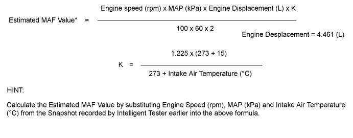
|
| ||||
|
| ||||
|
| ||||
| A | |
| 6.INSPECT VACUUM HOSE |
Check the vacuum hose connection (manifold absolute pressure sensor).
|
| ||||
| OK | |
| 7.READ VALUE USING INTELLIGENT TESTER |
Connect the intelligent tester to the DLC3.
Turn the engine switch on (IG) and turn the tester on.
Enter the following menus: Powertrain / Engine / Data List / MAP and Atmosphere Pressure.
Compare MAP to Atmosphere Pressure when the engine switch is on (IG) (engine stopped).
| Result | Proceed to |
| Atmosphere Pressure is different from actual atmospheric pressure | A |
| MAP is different from actual atmospheric pressure | B |
| MAP and Atmosphere Pressure have the same value | C |
|
| ||||
|
| ||||
|
| ||||
| 8.INSPECT MASS AIR FLOW METER |
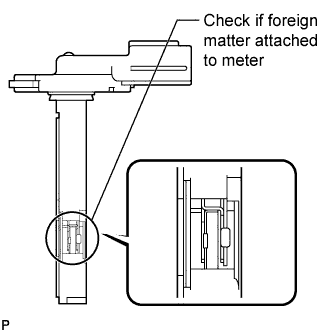 |
Using a work light, check that the platinum filament (heater portion) in the mass air flow meter has no foreign matter attached.
Connect the intelligent tester to the DLC3.
Turn the engine switch on (IG) and turn the tester on.
Enter the following menus: Powertrain / Engine / Data List / MAF.
Read the value.
|
| ||||
| OK | |
| 9.INSPECT EGR VALVE ASSEMBLY (No. 1 or No. 2) |
Check the EGR valve condition using the snapshot taken when accelerating with the accelerator fully open.
| Tester Display | Standard Value |
| Actual EGR Valve Pos. | 0% |
| Actual EGR Valve Pos. #2 | 0% |
Next, after the engine is warmed up, stop the engine and wait for 15 seconds. After that, start the engine again and idle it for 30 seconds. Then stop the engine and wait for 15 seconds. After starting the engine again, read the Data List values while idling.
| Tester Display | Standard Value |
| EGR Close Learn Val. | 3.5 to 4.5 V |
| EGR Close Lrn. Val. #2 | 3.5 to 4.5 V |
| EGR Close Lrn. Status | ON |
| Result | Suspected Trouble Area | Proceed to |
| A: Actual EGR Valve Pos with the engine switch on (IG) and the engine stopped is 0%. During idling, EGR valve is partially open. (Basically, it smoothly follows Target EGR Position). | When A is not met: EGR valve is stuck | B |
| B: EGR Close Learn Val is within the standard value and EGR Close Lrn Status is ON. | When B is not met: EGR valve does not close | B |
| Both A and B are OK | - | A |
|
| ||||
| A | |
| 10.READ VALUE USING INTELLIGENT TESTER |
Connect the intelligent tester to the DLC3.
Turn the engine switch on (IG) and turn the tester on.
Enter the following menus: Powertrain / Engine / Data List / Accel Position.
Read the value.
| Condition | Standard Value |
| Accelerator pedal released | 0% |
| Accelerator pedal depressed | 100% |
Accelerator pedal released → depressed
| 0 to 100% |
|
| ||||
| OK | |
| 11.READ VALUE USING INTELLIGENT TESTER |
Connect the intelligent tester to the DLC3.
Turn the engine switch on (IG) and turn the tester on.
Enter the following menus: Powertrain / Engine / Data List / Actual Throttle Position, Actual Throttle Position #2.
Read the value.
| Condition | Standard Value |
| Engine switch on (IG) | -5 to 5 % |
| Idling (warmed up engine) | 0 to 90% |
Accelerator pedal fully depressed
| -5 to 5 % |
|
| ||||
| OK | |
| 12.CHECK INTAKE SYSTEM |
Check for air leakage and blockage between the air cleaner and turbocharger, and between the turbocharger and intake manifold.
|
| ||||
| OK | |
| 13.CHECK TURBOCHARGER SUB-ASSEMBLY (MECHANICAL PROBLEM (for Bank 1 or Bank 2)) |
Disconnect the air cleaner hose.
Use a mirror to visually check the turbocharger for any mechanical problems.
When the engine is cold, check that the impeller of the turbocharger rotates smoothly, and confirm whether there is any damage to it.
Reconnect the air cleaner hose.
|
| ||||
| OK | |
| 14.INSPECT TURBOCHARGER SUB-ASSEMBLY (for Bank 1 or Bank 2) |
Check the motor movement when turning the engine switch on (IG), when starting the engine and then when turning the engine switch off.
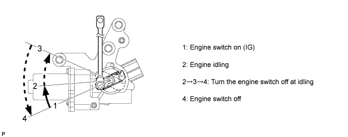
|
| ||||
| OK | |
| 15.CHECK MONOLITHIC CONVERTER ASSEMBLY (for Bank 1 or Bank 2) |
Check that there are no clogs, dents, etc. in the monolithic converter assembly.
|
| ||||
| OK | |
| 16.CONFIRM WHETHER MALFUNCTION HAS BEEN SUCCESSFULLY REPAIRED |
Check whether the lack of power has been successfully repaired.
|
| ||||
| OK | ||
| ||
| 17.BLEED AIR FROM FUEL SYSTEM |
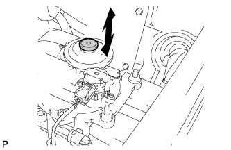 |
Using the hand pump as indicated by the arrow in the illustration, bleed the fuel system. Continue pumping until pumping becomes difficult.
| NEXT | |
| 18.CHECK IF FUEL IS BEING SUPPLIED TO FUEL SUPPLY PUMP |
Disconnect the inlet hose from the fuel supply pump.
Operate the priming pump and check that fuel is being supplied to the fuel supply pump.
|
| ||||
| OK | |
| 19.CONFIRM WHETHER MALFUNCTION HAS BEEN SUCCESSFULLY REPAIRED |
Check whether the lack of power has been successfully repaired.
| OK | ||
| ||
| 20.CHECK FUEL LEAK (FUEL SUPPLY PUMP) |
Connect the intelligent tester to the DLC3.
Turn the engine switch on (IG) and turn the tester on.
Enter the following menus: Powertrain / Engine / Data List / Fuel Press.
Pinch the fuel supply pump return hose and check that Fuel Press during cranking increases.
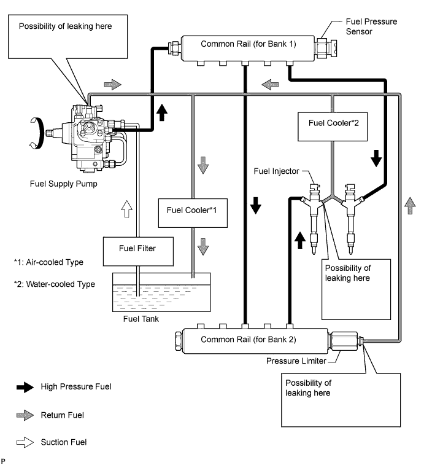
| Result | Proceed to |
| No change | A |
| Fuel Press increases | B |
|
| ||||
| A | |
| 21.CHECK FUEL LEAK (PRESSURE LIMITER) (COMMON RAIL (for Bank 2)) |
Connect the intelligent tester to the DLC3.
Turn the engine switch on (IG) and turn the tester on.
Enter the following menus: Powertrain / Engine / Data List / Fuel Press.
Pinch the pressure limiter return hose and check that Fuel Press during cranking increases.
| Result | Proceed to |
| No change | A |
| Fuel Press increases | B |
|
| ||||
| A | |
| 22.REPLACE FUEL SUPPLY PUMP |
Replace the fuel supply pump (Click here).
| NEXT | |
| 23.CONFIRM WHETHER MALFUNCTION HAS BEEN SUCCESSFULLY REPAIRED |
Check whether the lack of power has been successfully repaired.
| NEXT | ||
| ||
| 24.CHECK TEMPERATURE WHEN LACK OF POWER OCCURS |
Check the temperature when lack of power occurs.
| Result | Proceed to |
| Poor acceleration only when engine is cold | A |
| Poor acceleration when engine is cold and warm | B |
|
| ||||
| A | |
| 25.INSPECT ENGINE COOLANT TEMPERATURE SENSOR |
Inspect the engine coolant temperature sensor (Click here).
|
| ||||
| OK | |
| 26.INSPECT GLOW PLUG ASSEMBLY (RESISTANCE) |
Disconnect the glow plug connector.
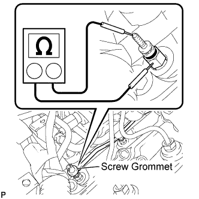 |
Measure the resistance according to the value(s) in the table below.
| Tester Connection | Condition | Specified Condition |
| Glow plug terminal - Body ground | 20°C (68°F) | Approximately 1 Ω |
|
| ||||
| OK | |
| 27.INSPECT INJECTOR COMPENSATION CODE |
Read the injector compensation code (Click here).
|
| ||||
| OK | |
| 28.CHECK FUEL QUALITY |
Check that fuel with a low cetane number is used.
| NEXT | |
| 29.CONFIRM WHETHER MALFUNCTION HAS BEEN SUCCESSFULLY REPAIRED |
Check whether the lack of power has been successfully repaired by starting the engine.
| NEXT | ||
| ||
| 30.PERFORM ACTIVE TEST USING INTELLIGENT TESTER |
Connect the intelligent tester to the DLC3.
Start the engine and turn the tester on.
Enter the following menus: Powertrain / Engine / Active Test / Control the Cylinder #1 to #8 Fuel Cut.
| NEXT | |
| 31.PERFORM ACTIVE TEST USING INTELLIGENT TESTER |
Connect the intelligent tester to the DLC3.
Turn the engine switch on (IG) and turn the tester on.
Enter the following menus: Powertrain / Engine / Active Test / Check the Cylinder Compression / Data List / Compression / Engine Speed of Cyl #1 to #8.
Check the engine speed during the Active Test.
|
| ||||
|
| ||||
| 32.CHECK CYLINDER COMPRESSION PRESSURE OF MALFUNCTIONING CYLINDER |
Check the cylinder compression pressure (Click here).
|
| ||||
| OK | |
| 33.REPLACE FUEL INJECTOR OF MALFUNCTIONING CYLINDER |
| NEXT | ||
| ||
| 34.CHECK INTAKE SYSTEM DEPOSIT |
Check if 3 mm or more of carbon is accumulating on the intake manifold, cylinder head, etc. and if so, clean it off.
| NEXT | |
| 35.CONFIRM WHETHER MALFUNCTION HAS BEEN SUCCESSFULLY REPAIRED |
| NEXT | ||
| ||